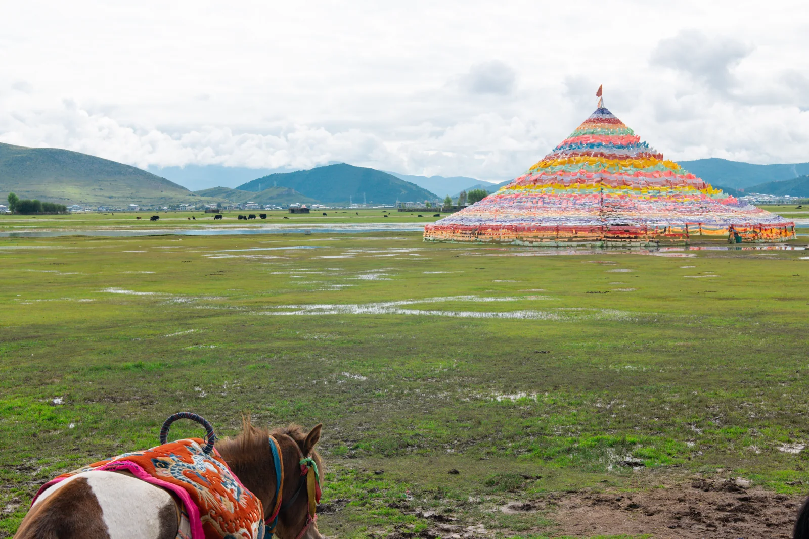
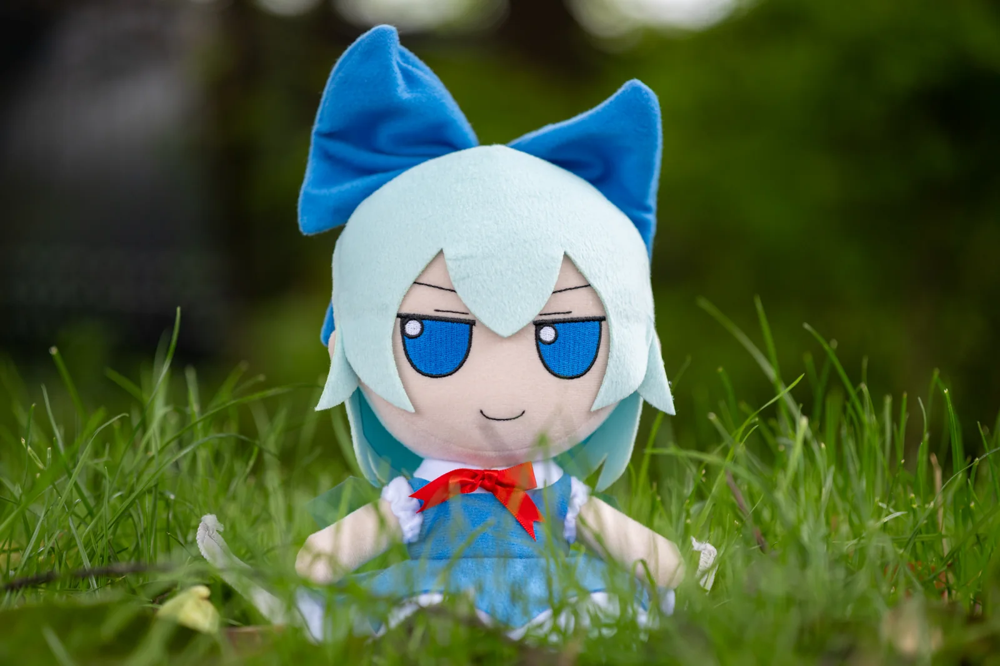

“把今天遇见的好运，
分你一半。”

“风吹过这里，
也吹过想你的时候。”

“今天什么也没做，
但很开心。”
点击一张，读读沿途的话
01 / 漂流故事
画面慢慢模糊，
故事慢慢清晰。
每一次转寄，照片会失去一些细节，
也会多带走一个人的心情。
以下为示例旅程，由真实照片生成
02 / 如何漂流
像寄信一样简单，
像相遇一样奇妙。
- 01
留下此刻
选一张随手拍，写下想说的话。照片不会上传到服务器。
- 02
寄出清晰的一刻
保存带二维码的明信片，把图片发给朋友或分享到社交平台。
- 03
让故事继续
对方扫码留下新的话，再寄出更模糊的一代。16 格，慢慢变成一团记忆的颜色。
“照片会忘记细节，文字会记得我们来过。”
03 / 开始漂流
此刻，你想寄出什么？
不需要完美构图，真实的一瞬间就足够。
01
没有合适的照片？
二维码只携带像素化照片和文字，不包含清晰原图。
实时预览第一站 / THE BEGINNING
你的照片会出现在这里
写下一段话，让这张照片有目的地。
— 未署名FROM AFAR
保存时自动加入二维码，第一站的照片保持清晰。